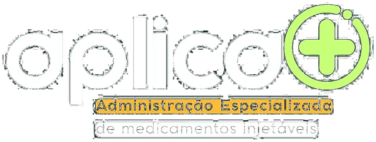
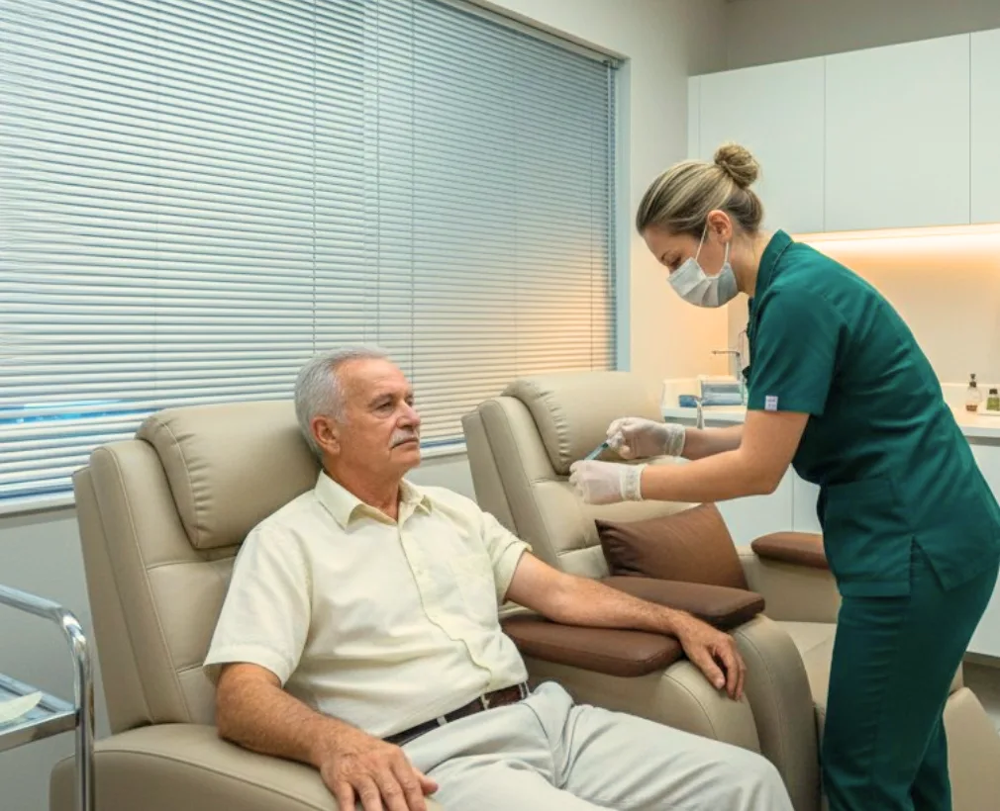
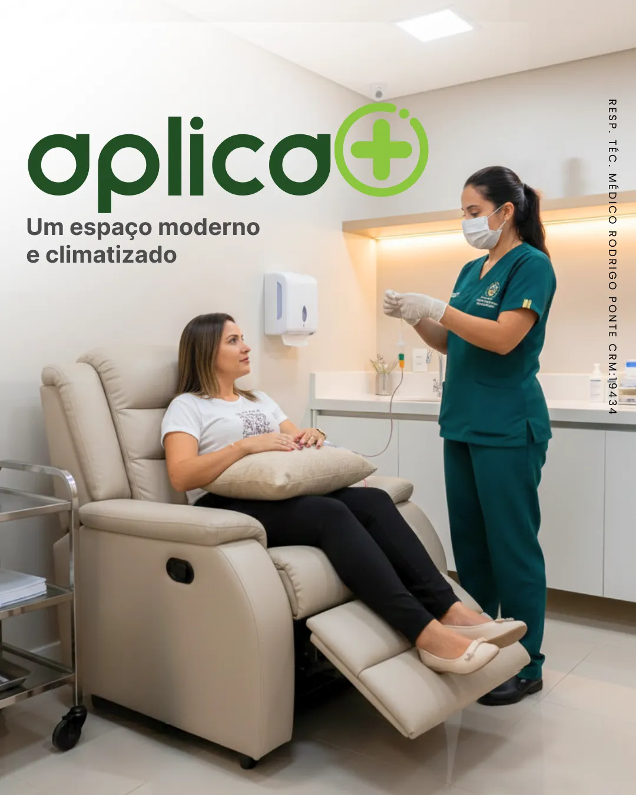
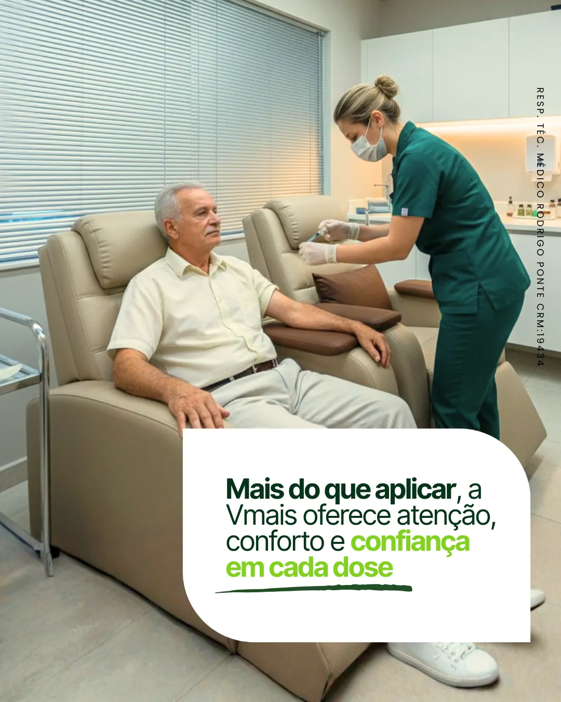
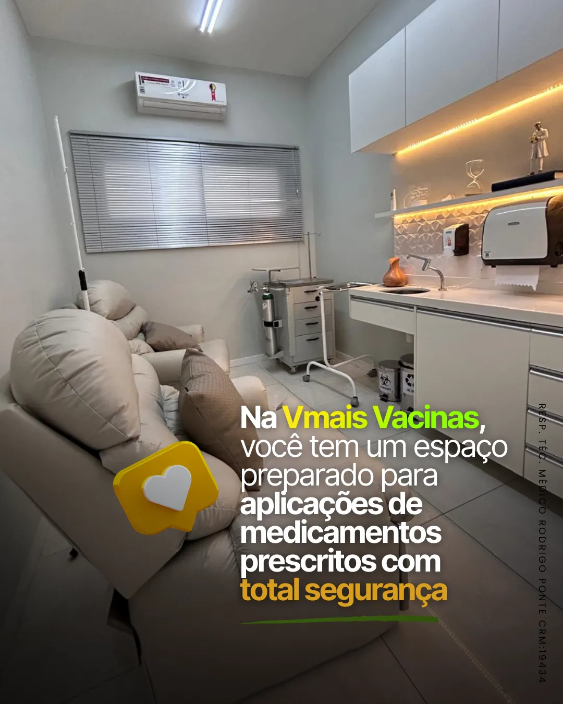
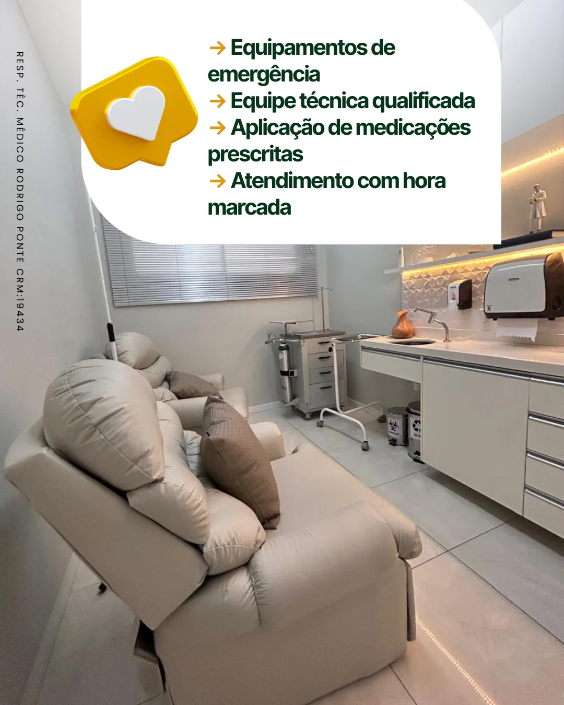
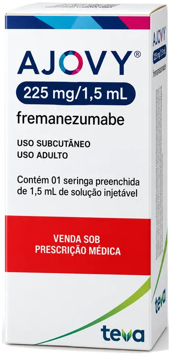
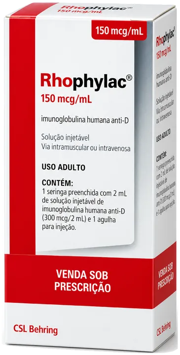

Início / Serviços / Ambulatório

Ambulatório VMais
Pequenos cuidados, com a mesma atenção da vacina.
Aplicação de injetáveis, furo de orelha humanizado, curativos e outros procedimentos simples, feitos pela nossa enfermagem na clínica de Fátima.
- Enfermagem especializada e ambiente climatizado
- Recepções separadas para crianças e adultos
- Agendamento rápido pelo WhatsApp

O que fazemos
Procedimentos do Aplica+
- Aplicação de medicamento injetávelMedicação intramuscular e endovenosa
- Perfuração de orelhasSistema System 75 / Furo Humanizado
- Curativo simples
- Teste de GlicemiaVerificar os níveis de açúcar no sangue
- Verificação de Pressão Arterial
- Remoção de suturasPontos
O espaço
Conforto e segurança em cada aplicação




Aplica+ · com receita médica
Medicamentos injetáveis que a enfermagem aplica
Você traz a receita e o medicamento, e a nossa enfermagem confere a prescrição, a dose e a validade antes de aplicar. Alguns exemplos:


A lista é só de exemplo. Pergunte pelo WhatsApp sobre o medicamento da sua receita. Medicamentos que precisam de geladeira devem chegar na embalagem térmica indicada pela farmácia.
Agende agora
Marque seu atendimento no Aplica+
Diga pelo WhatsApp qual procedimento você precisa. Para medicamentos injetáveis, traga a receita médica e o medicamento no dia.